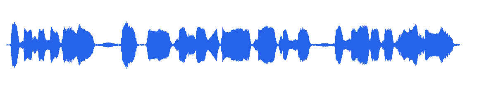
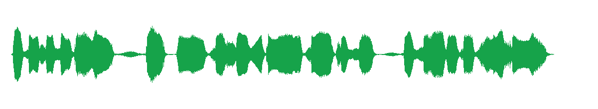

DeepFilterNet 本地实测
PASS · DeepFilterNet3 · 纯本地 CPU
真实项目口播，不改变原句、停顿和情绪，只做语音增强。
6.452 s输入 / 输出时长一致
0.15 s模型增强耗时
16 kHz单声道 PCM 输出
运行命令
powershell.exe -NoProfile -ExecutionPolicy Bypass -File .\tools\voice-lab\run-deepfilter.ps1 ` -InputPath .\experiments\E11-open-source-voice-probe\reference.wav
关键日志
Loading model settings of DeepFilterNet3 Running on device cpu Model loaded Enhanced noisy audio file 'reference.wav' in 0.15s (RT factor: 0.024) Enhanced audio written to: ...\deepfilter-output
波形对照
原始口播reference.wav

增强结果reference_DeepFilterNet3.wav

判断标准
重点听呼吸、齿音和句尾是否仍自然。波形更干净不等于听感更好；如果声音变薄，改用较温和的 --atten-lim，或直接保留原录音。